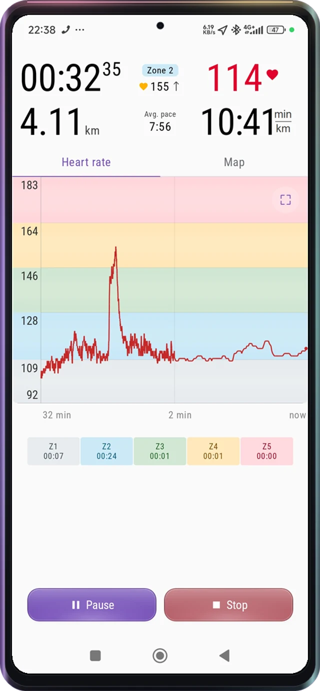
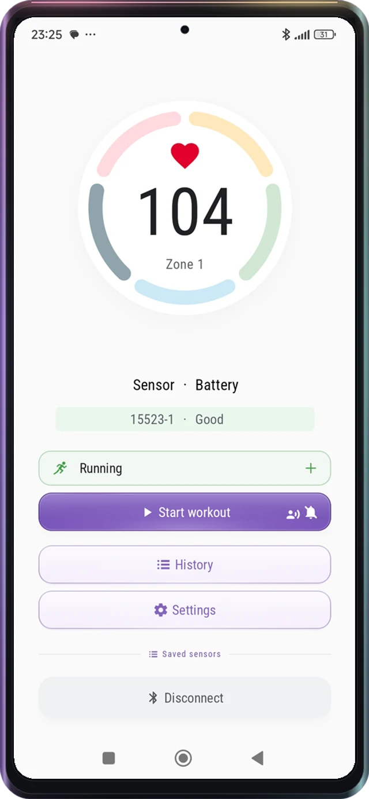
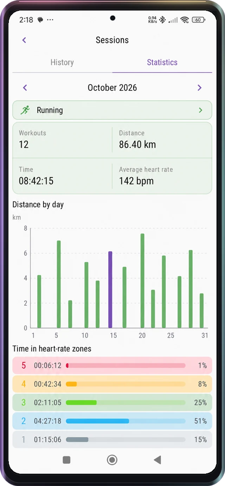
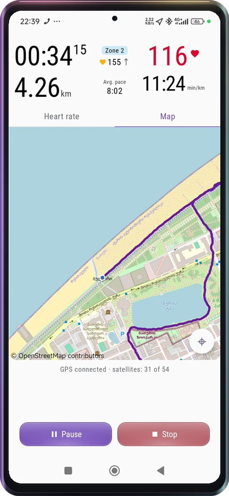
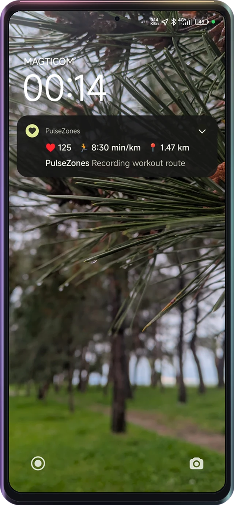
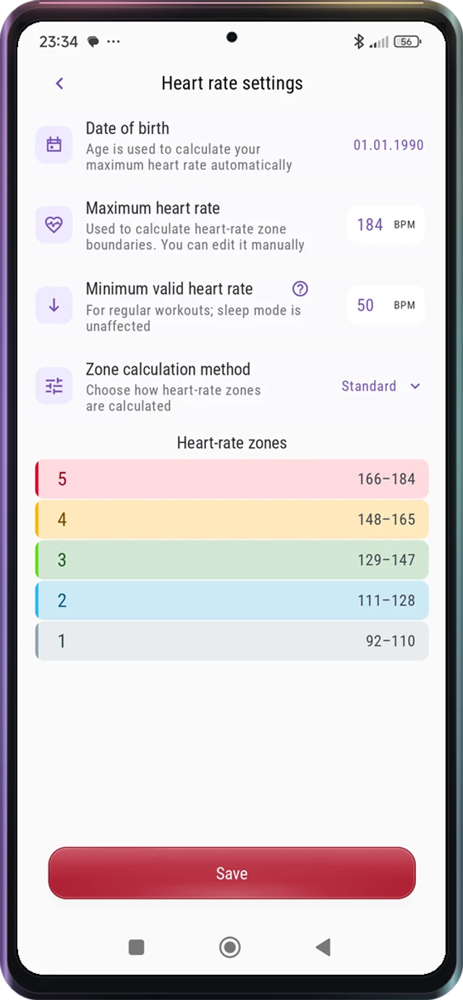
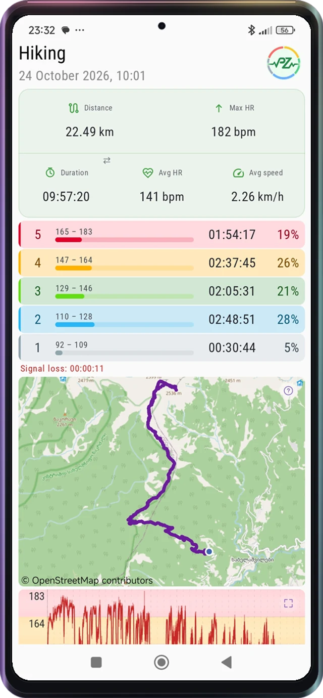

01
Herzfrequenz in Echtzeit
Sieh Puls, aktuelle Zone, Verlauf und Zeit pro Zone. Ton und Vibration helfen dir, die Belastung ohne Blick aufs Display zu verfolgen.

Kostenlos · Android · Werbefrei
Dein Smartphone als Trainingsanzeige für den Bluetooth-Brustgurt: Live-Puls, Pulszonen-Warnungen und GPS-Aufzeichnung. Kostenlos, ohne Werbung oder Benutzerkonto.


Live-Puls. Hilfreiche Trainingsdaten.
Von einem unabhängigen Entwickler für Läufer, Radfahrer und alle mit Pulsgurt. Wichtige Messwerte ohne störende Werbung.
Sieh Puls, aktuelle Zone, Verlauf und Zeit pro Zone. Ton und Vibration helfen dir, die Belastung ohne Blick aufs Display zu verfolgen.

Zeichne Strecke, Tempo, Geschwindigkeit, Dauer und Distanz beim Laufen, Radfahren oder Wandern auf.

Dein Training wird im Hintergrund weiter aufgezeichnet. Puls, Tempo und Distanz stehen in der Benachrichtigung auf dem Sperrbildschirm.

Trainingsanzahl, Distanz, Gesamtdauer, Durchschnittspuls und Zonenzeiten zeigen deinen Trainingsumfang.
Geburtsdatum eingeben, Maximalpuls festlegen und Standard- oder Karvonen-Methode wählen. Daraus werden die fünf Zonen berechnet.
Methoden vergleichen →
Prüfe Distanz, Dauer sowie Durchschnitts- und Maximalpuls. Strecke, Kurve und Zonenzeiten zeigen den Belastungsverlauf.

Alle Funktionen von PulseZones
Pulsgurt verbinden, Training verfolgen und Fortschritte teilen: Das bietet PulseZones auf Android.
Verbinde einen kompatiblen Bluetooth-Low-Energy-Sensor direkt in PulseZones. Persönlich getestet wurden GEOID HS500, Magene H303 und Magene H603. Andere Modelle müssen den standardisierten Bluetooth Heart Rate Service unterstützen.
Verfolge Puls, Zonennummer und Verlauf im Training. Auf der Startseite siehst du auch den verbundenen Sensor und seinen Batteriestatus.
Fünf farbige Zonen zeigen die Intensität. Aktuelle Zone und Zonenzeiten werden während des Trainings angezeigt.
Ja. Lass dich beim Verlassen einer Zielzone oder bei jedem Zonenwechsel warnen. Ton und Vibration helfen ohne Blick auf das Smartphone.
Wähle Karvonen und gib deinen Ruhepuls ein. Die Standardmethode nutzt Prozentsätze des Maximalpulses. Diesen kannst du festlegen oder anhand des Alters schätzen.
Berechnungsmethoden verstehen →Aktiviere GPS für Strecke, Distanz, Dauer, Geschwindigkeit und Tempo. Wähle Kilometer oder Meilen und wechsle zwischen Karte und Pulskurve.
Ein aktives Training wird weiter aufgezeichnet. Puls, Tempo und Distanz erscheinen in der Systembenachrichtigung, auch auf dem Sperrbildschirm.
Öffne ein gespeichertes Training: Dauer, Distanz, Durchschnitts- und Maximalpuls, Kurve, Zonenzeiten und Strecke stehen in einem Bericht.
Öffne ein gespeichertes Training und teile den Bericht mit Trainer, Freunden oder Trainingsgruppe.
Wähle Zeitraum und Sportart für Trainingsanzahl, Gesamtdistanz und -dauer, Durchschnittspuls, Tagesdistanzen und Zonenzeiten.
Wähle eine Woche oder einen Monat unter Statistik und teile den Bericht über Umfang und Intensitätsverteilung.
PulseZones bietet Laufen, Radfahren, Wandern, Kraft, Cardio, Sport und Schlaf sowie einen Demomodus. Statistiken lassen sich nach Aktivität anzeigen.
Ja, ohne Werbung, Abo oder Pflichtkonto. Du benötigst einen kompatiblen Bluetooth-Sensor: Die App zeigt Sensordaten, sie misst den Puls nicht mit der Kamera.
Die Kernfunktionen laufen offline. Profil, Trainingsverlauf und Strecken werden lokal gespeichert.
Zehn: Englisch, Russisch, Spanisch, brasilianisches Portugiesisch, Deutsch, Französisch, Italienisch, Polnisch, Türkisch und Georgisch.
Passe die Schriftgröße in der App an.
PulseZones zeigt Messwerte des verbundenen Sensors. Es erfindet keine Werte und ersetzt sie nicht durch Schätzungen. Genauigkeit hängt von Sensor, Hautkontakt und Verbindung ab.
Koordinaten kommen vom Standortsystem des Smartphones. Verdächtige Sprünge werden geglättet und die Strecke vor dem Speichern nachbearbeitet. Das mindert GPS-Fehler, ersetzt aber keinen guten Empfang.
Suchst du eine andere App für deinen Pulsgurt?
Entdecke PulseZones mit anpassbarer Zonenberechnung, zwei Alarmmodi und teilbaren Trainingsstatistiken.
Die Grundaufgaben sind ähnlich: Puls verfolgen, Training und GPS-Strecke aufzeichnen, Ergebnisse auswerten. PulseZones legt Wert auf Intensitätseinstellungen, sichtbare Messwerte und praktische Berichte.
Standard oder Karvonen wählen, Maximalpuls einstellen und bei Karvonen den Ruhepuls ergänzen. So bestimmst du die Berechnung der fünf Zonengrenzen.
Welche Methode passt? →Warnungen beim Verlassen einer bestimmten Zielzone oder bei sämtlichen Zonenwechseln helfen, die Belastung zu verfolgen.
Verbindung und Batterie stehen direkt nach dem Verbinden auf der Startseite.
Beim Wechsel zwischen Karte und Pulskurve bleibt die obere Anzeige mit Puls, Distanz, Dauer und Tempo oder Geschwindigkeit erhalten.
Zusätzlich zu einzelnen Trainings gibt es Wochen- und Monatsstatistiken. Zeitraum und Sportart wählen, Umfang und Zonenzeiten prüfen und teilen.
Englisch, Russisch, Spanisch, brasilianisches Portugiesisch, Deutsch, Französisch, Italienisch, Polnisch, Türkisch oder Georgisch.
Kostenlos, werbefrei und ohne Abo. Ein Konto ist nicht nötig; Verlauf und Strecken bleiben auf dem Smartphone.
Persönlich getestet: GEOID HS500, Magene H303 und Magene H603. Andere Modelle können über den Bluetooth Heart Rate Service funktionieren. Prüfe deinen Sensor vor einem langen Training.
Sensor verbinden →Gemeinsame Funktionen mit Polar Beat wurden anhand der offiziellen Polar-Funktionsbeschreibung geprüft. Hier werden PulseZones-Funktionen beschrieben. Polar Beat und Polar Flow unterscheiden sich und können sich ändern. PulseZones ist unabhängig und nicht mit Polar verbunden.
Laufen, Radfahren, Kraft und mehr
Kompatibilität
PulseZones unterstützt BLE-Sensoren mit dem standardisierten Bluetooth Heart Rate Service.
Elektroden befeuchten und Gurt am Brustkorb befestigen. Die meisten Sensoren starten automatisch.
Bluetooth und Geräte in der Nähe erlauben, dann den Sensor in der App auswählen.
Aktivität wählen und Start antippen. Danach den Sensor trennen und abnehmen. Wir empfehlen außerdem, den Sensor vom Gurt zu lösen.
Warum nach Pulszonen trainieren?
Der Puls zeigt die Beanspruchung. Zonen helfen, Erholung, lockere Ausdauer, zügiges Tempo und hohe Intensität einzuordnen.
Sie helfen beim dosierten Start, gleichmäßiger Belastung und Vergleich ähnlicher Einheiten. Grenzen sind Näherungen und hängen vom Verfahren ab.
Gezielt trainieren
Eine Steigung oder ein anderer Läufer verleiten zum Beschleunigen. Aus locker wird unbemerkt hart. Zonen helfen, das zu erkennen und die geplante Belastung zu halten.
Eine Zone ist ein Pulsbereich. Die fünf PulseZones-Bereiche von leicht bis intensiv zeigen neben der Dauer auch die Beanspruchung.
Beim Sammeln von Trainingsumfang zählt nicht immer die Geschwindigkeit. Wichtig sind passende Intensität und genügend Energie für folgende Einheiten.
Pulsbeobachtung hilft gegen unbewusstes Beschleunigen. Bei Hitze, langen Läufen oder Hügeln erfordert dasselbe Tempo unterschiedliche Belastung. Langsamer zu werden kann sinnvoll sein.
Achte auf die Atmung: Bei moderater Intensität sind meist ganze Sätze möglich. Wird Sprechen schwierig, ist die Belastung deutlich höher.
Intensive Wiederholungen wechseln mit lockeren Pausen. Die Kurve zeigt die Reaktion des Körpers; Zonenzeiten zeigen anschließend die Verteilung.
40 Minuten können locker, zügig oder als Intervalle gelaufen werden. Zonenzeiten zeigen den Unterschied.
Aktuelle Zone und Verlauf ansehen, danach Ergebnisse prüfen: Blieb der lockere Lauf locker? Wechselten schnelle Abschnitte mit Erholung?
Zonen sind Orientierung, keine Gut-schlecht-Bewertung. Sinnvolle Belastung passt zu Trainingsziel und Befinden.
Quellen: CDC: Intensität und Sprechtest; Suunto: Puls bei Intervallen.
Berechnungsmethode wählen →Die Berechnung verstehen
Beide Verfahren verwenden den Maximalpuls. Karvonen berücksichtigt zusätzlich den Ruhepuls.
Methode 01
Die unteren Grenzen der fünf PulseZones-Zonen liegen bei 50, 60, 70, 80 und 90 Prozent des Maximalpulses.
Zonengrenze = Maximalpuls × Prozentsatz
Bei einem Maximalpuls von 180 Schlägen/min liegt die 60-Prozent-Marke bei: 180 × 0,60 = 108 Schläge/min.
Nutze den bekannten Maximalpuls oder eine Altersschätzung. PulseZones verwendet 220 − Alter.
Einfach, aber ohne Ruhepuls: Gleicher Maximalpuls bedeutet gleiche Zonengrenzen.
Methode 02
Die Reserve ist Maximalpuls minus Ruhepuls. Karvonen nimmt einen Prozentsatz davon und addiert den Ruhepuls.
Grenze = Ruhepuls + (Maximalpuls − Ruhepuls) × Prozentsatz
Beim gleichen Maximalpuls von 180 Schlägen/min und einem Ruhepuls von 60 Schlägen/min ergibt sich bei 60 Prozent: 60 + (180 − 60) × 0,60 = 132 Schläge/min.
Das sind 24 Schläge mehr. 60 Prozent des Maximums und der Reserve sind unterschiedliche Größen.
Das Herz arbeitet schon in Ruhe. Beim Sport steigt der Puls von dort zum Maximum. Karvonen schätzt den genutzten Anteil dieses verfügbaren Bereichs.
Zwei Personen haben einen Maximalpuls von 180 Schlägen/min. Eine hat Ruhepuls 50, die andere 80. Beide erreichen beim Sport 140.
| Messgröße | Erste Person | Zweite Person |
|---|---|---|
| Maximalpuls | 180 | 180 |
| Ruhepuls | 50 | 80 |
| Herzfrequenzreserve | 130 | 100 |
| Reserveanteil bei 140 | ≈ 69% | 60% |
| Maximalpuls-Anteil bei 140 | ≈ 78% | ≈ 78% |
Standard ergibt für beide etwa 78 Prozent. Karvonen berücksichtigt die unterschiedlichen Ausgangswerte: (140 − 50) ÷ 130 ≈ 69% und (140 − 80) ÷ 100 = 60%. Das veranschaulicht die Rechnung, beweist aber kein zwingend höheres Belastungsgefühl.
Mit Ruhepuls wird Belastung auf den verfügbaren Bereich bezogen. Der Anteil der Herzfrequenzreserve entspricht meist eher dem Anteil der Sauerstoffaufnahmereserve als ein pauschaler Prozentsatz des Maximums.
Ruhepuls hängt von Training, persönlichen Eigenschaften und aktuellem Zustand ab. Ein niedrigerer Wert kann mit besserer Ausdauer einhergehen, misst allein aber weder Gesundheit noch Fitness.
Standard ist ein einfacher Einstieg. Karvonen ist individueller, wenn der übliche Ruhepuls bekannt ist. Nutze mehrere ruhige Morgenmessungen vor Kaffee oder Aktivität.
Beide brauchen verlässliche Eingaben. Wird das Maximum mit 220 − Alter geschätzt, bleibt diese Unsicherheit bei Karvonen. Keines garantiert persönliche physiologische Schwellen.
Quellen: Polar: Herzfrequenzreserve und Methoden; Amerikanische Gesellschaft für Präventive Kardiologie: Intensität.
Kostenloser Pulszonenrechner
Der Rechner verwendet dieselbe Logik wie PulseZones. Das Ergebnis dient als Orientierung.
Deine Daten erklärt
Profil, Verlauf und Strecken bleiben auf deinem Gerät.
Training mit dem Sensor benötigt kein Internet. GPS kann ebenfalls ohne mobile Daten funktionieren.
Anonyme Absturzberichte helfen bei Fehlerbehebungen. Sie enthalten keine Puls- oder Trainingsdaten.
Häufige Fragen
Noch Fragen? Schreib dem Entwickler. Erfahrungen aus der Praxis helfen der App.
BLE-Sensoren mit standardisiertem Heart Rate Service. Getestet: GEOID HS500, Magene H303 und Magene H603.
Ja. Aktive Trainings werden weiter aufgezeichnet. Manche Smartphones benötigen Autostart und uneingeschränkte Akkunutzung.
Meist nicht. Bluetooth aktivieren und direkt in PulseZones verbinden.
Nein. Kostenlos, ohne Werbung oder Abo.
Nein. Sie dient Fitness und Information, ist kein Medizinprodukt und ersetzt keine ärztliche Beratung.
PulseZones für Android
Bluetooth-Brustgurt verbinden und loslegen. Kostenlos auf Android, ohne Werbung oder Anmeldung.
In Google Play öffnen